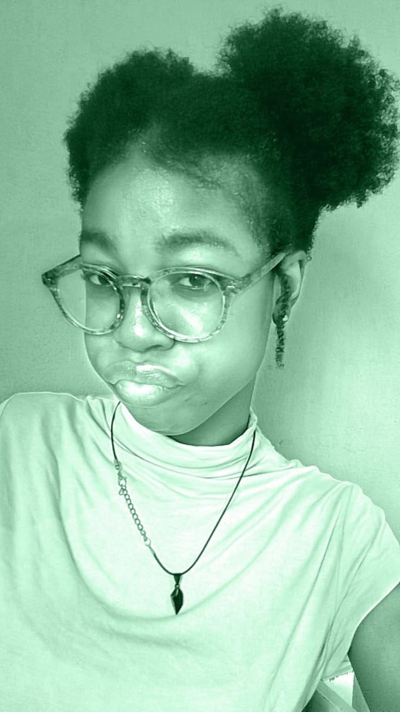
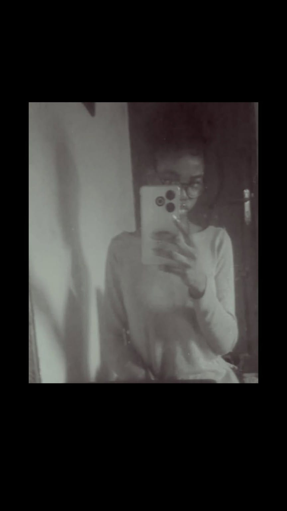

I Wanna Be Yours
Arctic Monkeys
Hey Fay, baby...
I don't really know how to start this. I've typed and deleted these words so many times, but I think I just need to be honest with you.
I still miss you.
I know we've been through this cycle before. We hurt each other, we try to fix things, and somehow we end up hurting each other again.
And honestly, I know I've pushed you away. I know there were times when I made you feel like I could just let you go and then come back whenever I wanted. You didn't deserve to feel that way hunny.
I never wanted you to feel like like id discard you anytime i wanted I never wanted you to think that I could just throw away what we had and expect you to still be there whenever I returned.
You held on for so long. You kept trying, even when things were difficult, until eventually you got tired. And I understand why hehe ...
When you said, that u supported me ..my decision this time I could feel how much you had already been through and it wasnt fair,i shouldnt put you thru this again..honestly i dont even know what i want but its to be with you not saying this coz im broken rn but its actuay what i feel.
I don't want to ignore that. I don't want to pretend that loving you means I should hold onto you without thinking about how you feel Ive got your bes interest in heart baby.
I just want you to know that I still love you. I love you more than I have ever been able to properly explain.
I'm childish sometimes. I make mistakes. I push people away when I'm scared. And sometimes I realize how much I've hurt someone only after it's already happened. im not throwing this as an excuse okie but its the truth.
I'm sorry, Fay...hope youd forgive me one day.
I'm sorry for the moments where I made you feel like you weren't enough. I'm sorry for the times I pushed you away when what I really wanted was for you to stay.
I wish I could go back and handle things differently. I wish I had understood sooner that loving someone isn't just about saying you love them. It's about making them feel safe, valued, and wanted too.
I don't know what you're thinking right now. Maybe you've moved on. Maybe you still think about me sometimes. Maybe you're just tired.
Whatever the case is, I don't want this page to pressure you into anything okay hunny, Im sorry if it made it hard for you again.
I just needed you to know that I still care. I still miss you. And a part of me still hopes that one day we can talk again and understand each other better.
If you ever feel that you still want us, well idk if its you with that ng link but if it is just an initial okiee your first name letter in a sentence and i promise you ill text you. You don't have to come back because you feel sorry for me or coz your hurt aswell,do because you still believ in us. You don't have to stay because you feel guilty.
If you ever reach out, I want it to be because it's what you genuinely want.
I just hope that if that day ever comes, I can show you that I've learned from the things that hurt us instead of repeating them.
I never got to say this properly when I should have...
I love you, Fay.
Always,
Jace ❤️


No matter where life takes us, I'll always be grateful that I got to love you.
Thank you for every memory, every laugh, every moment we shared.
You will always mean something to me. ❤️